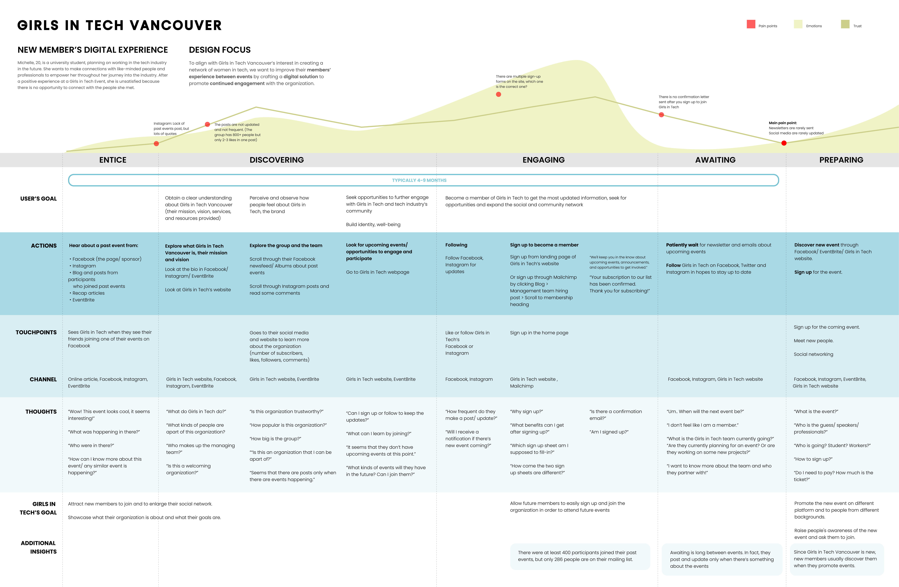
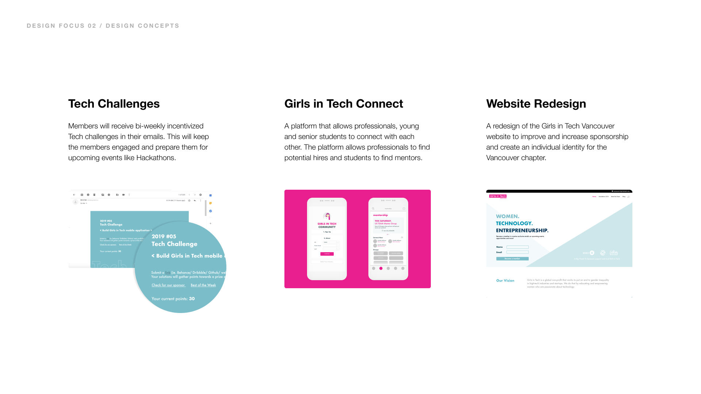

Girls in Tech Vancouver
UX/UI
In an interaction design methods course, a group of students and I worked collaboratively with an organization to solve real-world design problems. Our client was Girls in Tech Vancouver, a non-profit organization that aims to support women in tech and improve retention of women in technical roles. They achieve their goals by providing education and a community through events that they hold.
Project Video
Through a combination of user research methods, we found the most valuable information through a user journey map, in which we discovered that the interaction between members and Girls in Tech Vancouver was severely lacking in the period between events. In order for Girls in Tech to achieve their goal, we believed that there needed to be a stronger sense of community in between events.

User Journey Map
The team ideated individually on how Girls in Tech Vancouver could achieve a stronger sense of community beyond their events. We congregated and finalized three main ideas to pursue. I believed that members of Girls in Tech Vancouver require a more meaningful purpose for being a member and to solve that, I suggested a system where members would be given challenges to complete, where they can practice practical design or coding skills and receive feedback from industry professionals. The other ideas were a platform to connect members with industry professionals to support mentorship and find potential hires, and a website redesign to give Girls in Tech a stronger individual identity as an organization within Vancouver.

Three Main Ideas
In the end, the team decided the design solution to help Girls in Tech Vancouver better achieve their goal was to redesign their website to include a mentorship program, interviews, articles, open letters, and a job portal.